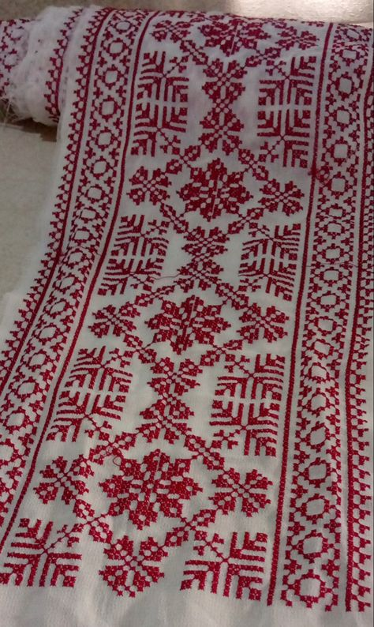
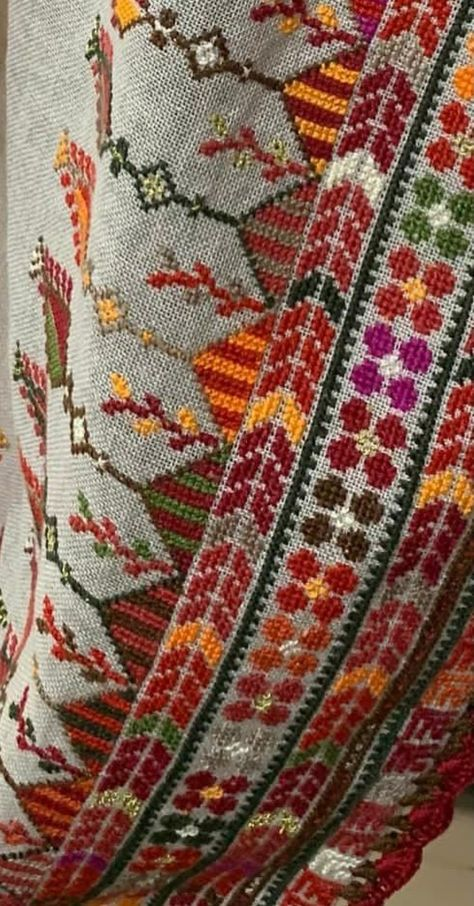
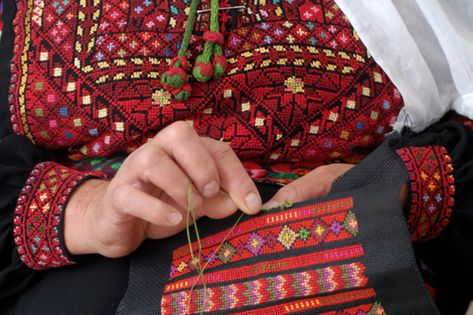
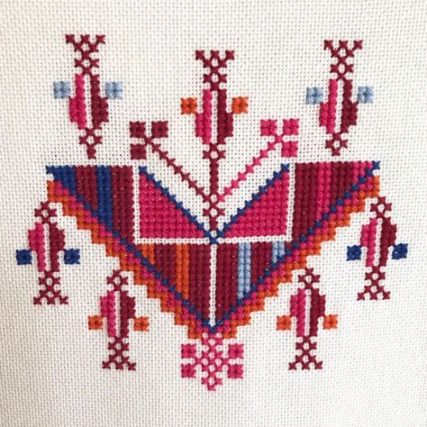
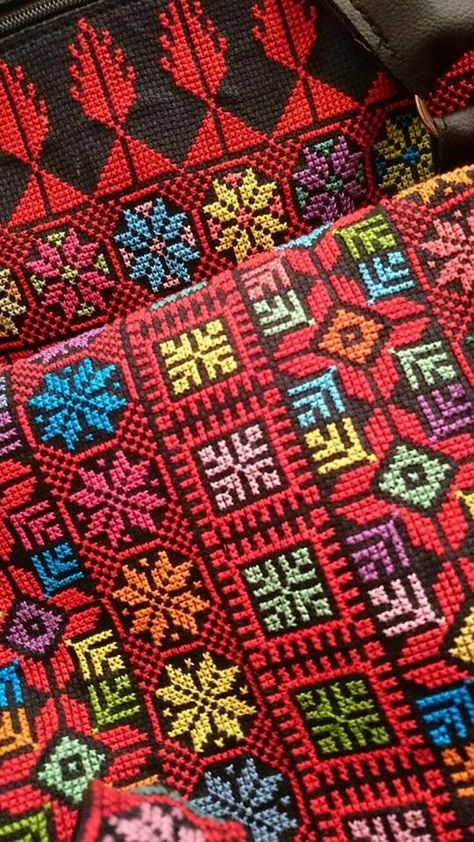
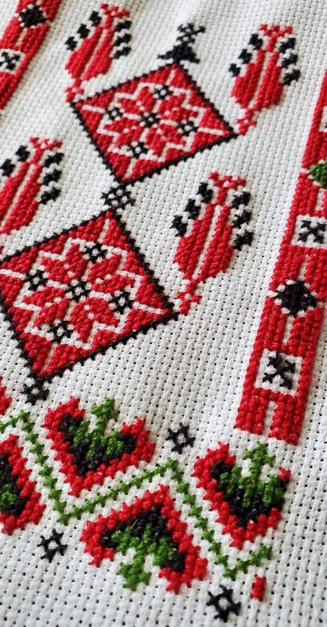
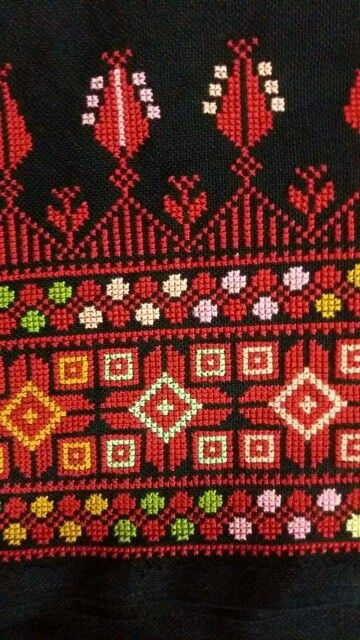
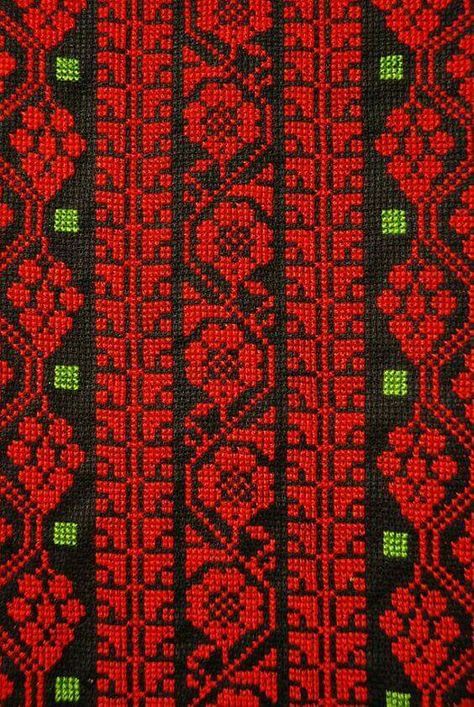

A closer look at the stitches
The art within
every thread.
A visual study of Palestinian Tatreez: the rhythm of cross-stitches, the balance of colour and the intricate motifs that give each embroidered piece its character. This gallery celebrates the details; explore the regional garments separately in The Thoub collection.
Patterns, details & texture
Look closely at the visual language of embroidery. Select an image to view it in a larger format.

The rhythm of a stitch
A closer look at the repeated marks that build an embroidered surface.


Geometry in thread
Repeating shapes create structure, movement and visual balance.


Texture & patience
Every small stitch contributes to the character of the finished textile.


Motifs with meaning
Traditional forms carry memory through patterns passed between generations.


A language of colour
Colour combinations help give each composition its distinctive presence.


Lines & repetition
Rhythm and repetition transform simple stitches into intricate designs.


Balance & symmetry
Careful placement gives motifs their order and distinctive visual flow.


Craft in detail
The beauty of Tatreez emerges through the care invested in every detail.


A living visual archive
Patterns keep cultural knowledge visible, shared and continually renewed.
“The smallest stitch can hold a story larger than the cloth itself.”
Threads of memory · Palestinian Tatreez